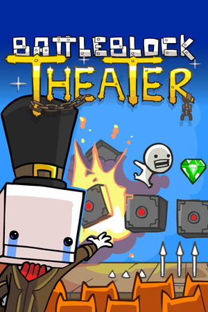

FAMILY COOP · BETA
Hollow Knight
Até quatro jogadores, skins individuais e resgate de amigos. O mod está instalado na configuração local da família e segue em testes.
Como funcionaUma biblioteca para começar a jogar no mesmo PC. Cada jogo tem sua capa, seu modo coop e um caminho simples até a partida.

Capas e ações no mesmo tamanho. Escolha o jogo que vocês querem abrir.
Até quatro jogadores, skins individuais e resgate de amigos. O mod está instalado na configuração local da família e segue em testes.
Como funcionaCampanha cooperativa local com progresso salvo. Três jogadores foram testados; a quarta vaga ainda precisa de confirmação.
Usar no launcherO menu de jogadores do Family Coop aparece depois de clicar em Jogar.
Cada pessoa ocupa um slot, escolhe sua skin e marca que está pronta.
Cada jogador pode usar uma aparência diferente. O app inclui um atalho para adicionar skins.
O launcher verifica novas versões ao abrir. No cartão de Hollow Knight, o botão Atualizar Family Coop instala patches do mod com verificação SHA-256.
Baixe o app para Windows e abra o Coop Launcher.
Na biblioteca, escolha o executável do jogo instalado no seu PC.
No Hollow Knight configurado, clique em Jogar Family Coop e monte a equipe.
O download inclui o aplicativo. Cada pessoa precisa ter os jogos instalados no próprio PC.
SHA-256: 168d93f389c5599f8063ce361337b7fe4d07e79a8adf106b08dae10a48572b53